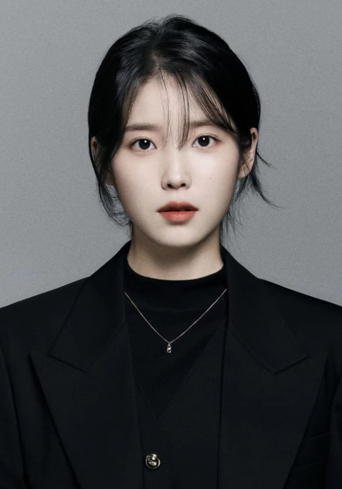
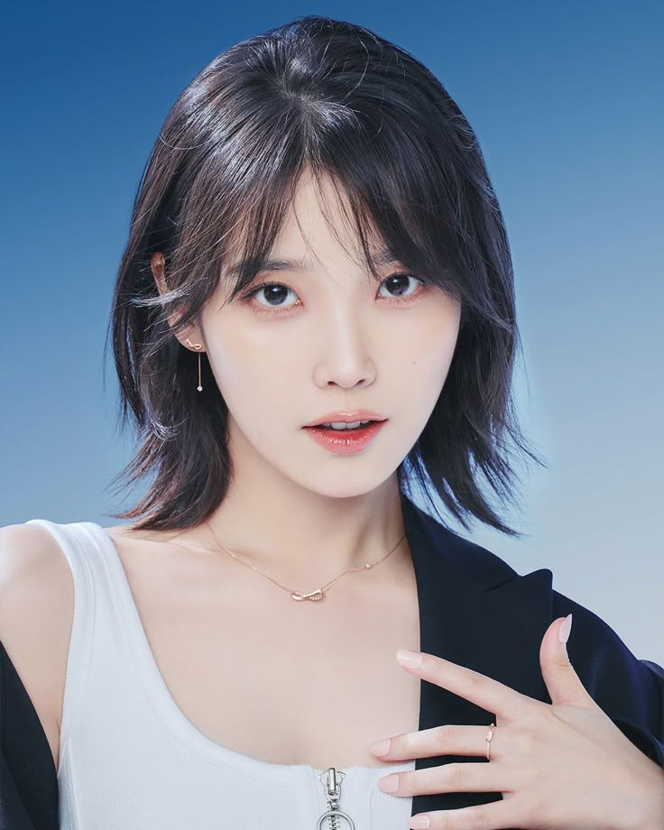

IU, whose real name is Lee Ji-eun, is a South Korean singer-songwriter and actress known for her versatile
voice
and emotional performances. She debuted in 2008 under Kakao Entertainment and quickly rose to fame with hits
like “Good Day,” “Palette,” and “Blueming.” IU is widely respected for her ability to write and compose many
of
her own songs, often expressing themes of youth, love, and personal growth.
Beyond music, she has also built
a successful acting career, starring in popular dramas such as Hotel Del Luna
and My Mister, where she received praise for her deep and realistic acting skills. IU is often called “The
Nation Little Sister” in South Korea due to her positive public image and widespread popularity. Over the
years, she has become one of the most influential artists in K-pop, admired for her talent, humility, and
artistic evolution.